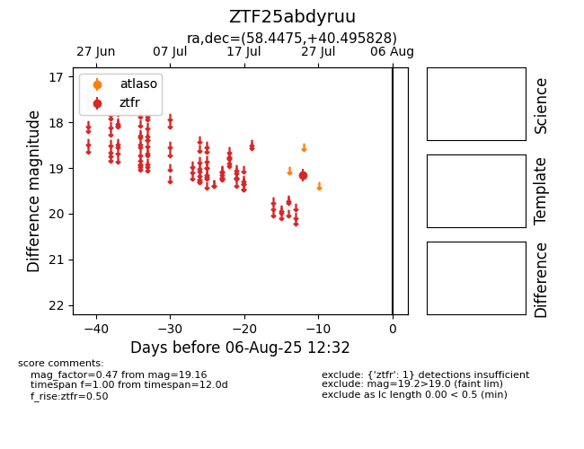

Target ZTF25abdyruu at 2025-08-06 17:07, see:
FINK: fink-portal.org/ZTF25abdyruu
Lasair: lasair-ztf.lsst.ac.uk/objects/ZTF25abdyruu
ALeRCE: alerce.online/object/ZTF25abdyruu
alt names
ZTF25abdyruu (ztf,fink)
coordinates:
equatorial (ra, dec) = (58.4475,+40.49583)
galactic (l, b) = (156.4348,-10.22513)
photometry
last ztfr=19.16
1 ztfr detections
